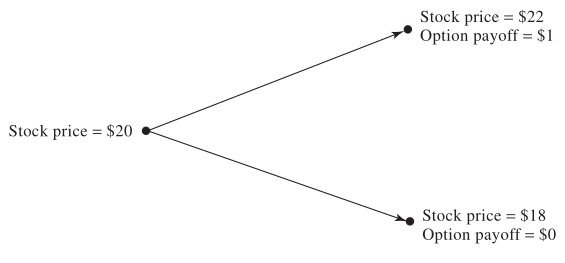
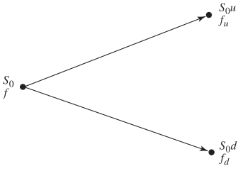
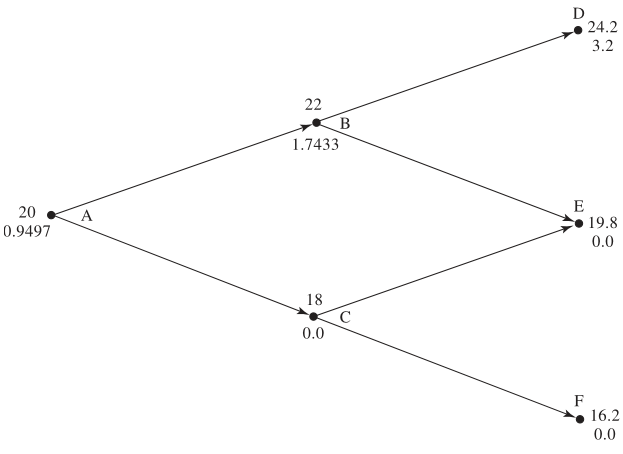
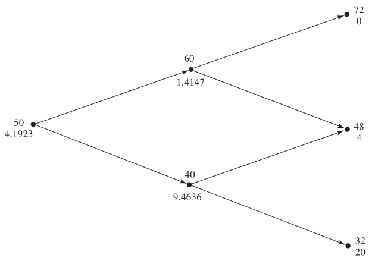
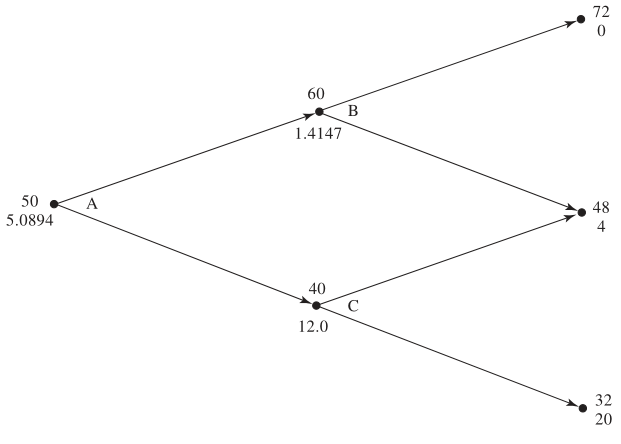

8 Option Pricing - Binomial Trees
- HULL, John. Options, futures, and other derivatives. Ninth edition. Harlow: Pearson, 2018. ISBN 978-1-292-21289-0.
- Chapter 13 - Binomial Trees
- PIRIE, Wendy L. Derivatives. Hoboken: Wiley, 2017. CFA institute investment series. ISBN 978-1-119-38181-5.
- Chapter 4 - Valuation of Contingent Claims
- Cox, J. C., S. A. Ross, and M. Rubinstein. "Option Pricing: A Simplified Approach," Journal of Financial Economics 7 (October 1979): 229–64.
Learning Outcomes:
- Understand the one-step binomial model for option pricing, including how to construct a riskless portfolio and compute option value.
- Grasp risk-neutral valuation and how it simplifies derivative pricing by discounting expected payoffs at the risk-free rate.
- Learn how to extend the binomial model to two steps and calculate option values at each node.
- Understand how to choose the up (\(u\)) and down (\(d\)) factors based on volatility and time step length, following the Cox-Ross-Rubinstein (CRR) model.
- Explore how the binomial model adapts to various assets, including non-dividend-paying stocks, indices, currencies, and futures.
8.1 A One-Step Binomial Model
This section introduces a fundamental method for pricing derivatives using a simple binomial model. It provides an intuitive approach to option pricing based on constructing a riskless portfolio and applying no-arbitrage principles.
The binomial model forms the foundation for understanding discrete-time derivative pricing and risk-neutral valuation, paving the way for more advanced continuous-time models.
A Simple Binomial Model for a Call Option
Option Characteristics:
- 3-month call option on a stock
- Strike price: $21
- Current stock price: $20
- In 3 months, stock can rise to $22 or fall to $18
- Risk-free rate: 4%

Option Pricing Steps
- Constructing a Riskless Portfolio
- Long \(\Delta\) shares, short 1 call option.
- Make the portfolio value identical in both scenarios:
- If stock rises to $22: \(\$22\Delta - 1\)
- If stock falls to $18: \(\$18\Delta\)
- Solving \(\$22\Delta - 1 = \$18\Delta\) gives \(\Delta = 0.25\).
- Valuing the Riskless Portfolio
- Future value of the portfolio: \(\$22 \times 0.25 - 1 = \$18 \times 0.25 = \$4.50\).
- Present value: \(4.50 \times e^{-0.04 \times 0.25} = \$4.455\)
- Determining the Option’s Value
- Value of 0.25 shares: \(0.25 \times 20 = \$5\)
- Option price: \(\$5 - \$4.455 = \$0.545\)
General Binomial Option Pricing Framework
This generalization shows how to price options systematically using a binomial approach, grounded in arbitrage-free pricing and synthetic replication.
Core Concepts
Portfolio value:
- Up move: \(S_0 u \Delta - f_u\)
- Down move: \(S_0 d \Delta - f_d\)
Delta to eliminate risk:
\[ \Delta = \frac{f_u - f_d}{S_0 (u - d)} \]
Delta reflects the option’s sensitivity to changes in the underlying price.
No-Arbitrage Pricing:
- A riskless portfolio must grow at the risk-free rate.
Analytical Derivation

- Future value: \(S_0 u \Delta - f_u\)
- Present value: \((S_0 u \Delta - f_u)e^{-rT}\)
- Initial cost: \(S_0 \Delta - f\)
Set initial cost equal to discounted future value:
\[ f = S_0 \Delta - (S_0 u \Delta - f_u)e^{-rT} \]
Substitute \(\Delta\) to get the pricing formula:
\[ f = [pf_u + (1 - p)f_d]e^{-rT} \]
with risk-neutral probability of an upward price movement:
\[ p = \frac{e^{rT} - d}{u - d} \]
- \(p\) and \(1 - p\) represent the probabilities of up and down moves in a risk-neutral world.
- In this world, expected payoffs are discounted at the risk-free rate—capturing the core idea of derivative pricing in arbitrage-free markets.
Key Binomial Option Pricing Formulas
Option price: \[ f = [pf_u + (1 - p)f_d]e^{-rT} \]
Risk-neutral probability: \[ p = \frac{e^{rT} - d}{u - d} \]
Variable Definitions:
- \(f\): Option price
- \(p\): Risk-neutral probability of up move
- \(1 - p\): Risk-neutral probability of down move
- \(f_u\), \(f_d\): Option payoffs in up/down states
- \(u\), \(d\): Up/down factors
- \(T\): Time to maturity (in years)
- \(r\): Risk-free interest rate (continuously compounded, annualized)
Example: Binomial Option Pricing
Given: \(u = 1.1\), \(d = 0.9\), \(r = 0.04\), \(T = 0.25\), \(f_u = 1\), \(f_d = 0\)
Compute \(p\):
\[ p = \frac{e^{0.04 \times 0.25} - 0.9}{1.1 - 0.9} = 0.5503 \]
Compute \(f\):
\[ f = e^{-0.04 \times 0.25} (0.5503 \times 1 + 0.4497 \times 0) = 0.545 \]
The option’s value is $0.545—its expected payoff discounted at the risk-free rate.
8.2 Risk-Neutral Valuation Framework
Risk-neutral valuation is a core concept in derivative pricing. It simplifies valuation by assuming the underlying asset grows at the risk-free rate, allowing us to price derivatives using expected payoffs discounted at that same rate.
Core Concept
Expected Stock Price under Risk Neutrality:
In the binomial model, with up/down probabilities \(p\) and \(1 - p\), the expected stock price at time \(T\), discounted at the risk-free rate, equals the current stock price:
\[ \mathbb{E}[S_T] = S_0 e^{rT} \] This reflects the assumption that, in a risk-neutral world, the stock grows at rate \(r\).Binomial Trees in Derivative Pricing:
Binomial trees illustrate that, for pricing purposes, we can:- Assume the stock grows at the risk-free rate,
- Discount future payoffs at the same rate.
This removes the need to estimate real-world returns, focusing purely on arbitrage-free pricing in a risk-neutral world.
Given:
\(u = 1.1\), \(d = 0.9\), \(r = 0.04\), \(T = 0.25\), \(f_u = 1\), \(f_d = 0\)
- Solve for \(p\) using stock price consistency:
\[ 22p + 18(1 - p) = 20e^{0.04 \times 0.25} \Rightarrow p = 0.5503 \]
- Expected option payoff under risk-neutral probability:
\[ 0.5503 \times 1 + 0.4497 \times 0 = 0.5503 \]
- Discounting to present value:
\[ 0.5503 \times e^{-0.04 \times 0.25} = 0.545 \]
This matches the price obtained from the no-arbitrage approach, confirming that risk-neutral valuation and no-arbitrage yield the same result.
Why the Real-World Expected Return Doesn’t Matter
- Real-world probabilities are already embedded in today’s stock price.
- When pricing derivatives, we don’t need to model the asset’s real-world expected return.
- All pricing is done under the risk-neutral measure, where every asset earns the risk-free rate.
This insight is central to modern finance: derivative prices depend on the structure of payoffs and arbitrage conditions, not the actual return expectations of the underlying asset.
8.3 Two-Step Binomial Trees
The two-step binomial tree extends the one-period model, allowing for more realistic option pricing over multiple time steps. It captures more possible paths for the underlying asset and enables valuation of both call and put options by discounting expected payoffs at each node.
Valuing a Call Option
Consider a call option with:
- Strike price: \(K = \$21\)
- Time step: 3 months
- Annual risk-free rate: \(r = 4\%\)
- Up/down factors: \(u = 1.1\), \(d = 0.9\)
- Risk-neutral probability: \(p = 0.5503\)

- At final nodes (\(D\), \(E\), \(F\)), option values equal intrinsic payoffs.
- At nodes \(B\) and \(C\), compute expected payoff, discounted to present:
\[ \text{Node B} = e^{-0.04 \times 0.25}(0.5503 \times 3.2 + 0.4497 \times 0) = \$1.7433 \] \[ \text{Node C} = 0 + 0 = \$0 \] \[ \text{Node A} = e^{-0.04 \times 0.25}(0.5503 \times 1.7433 + 0.4497 \times 0) = \$0.9497 \]
Valuing a Put Option
For a put option with:
- Strike price: \(K = \$52\)
- Time step: 1 year
- \(r = 5\%\), \(u = 1.2\), \(d = 0.8\), \(p = 0.6282\)

Working backward from the final nodes:
\[ \text{Node C} = e^{-0.05 \times 1}(0.6282 \times 4 + 0.3718 \times 20) = \$9.4636 \] \[ \text{Node B} = e^{-0.05 \times 1}(0.6282 \times 0 + 0.3718 \times 4) = \$1.4147 \] \[ \text{Node A} = e^{-0.05 \times 1}(0.6282 \times 1.4147 + 0.3718 \times 9.4636) = \$4.1923 \]
Impact of the American Feature on a Put Option
American options allow early exercise, which can increase their value.
- At node \(C\), early exercise yields $12, replacing the original value of $9.4636.
- Updating node \(A\) with this new value:
\[ \text{Node A} = e^{-0.05 \times 1}(0.6282 \times 1.4147 + 0.3718 \times 12.0000) = \$5.0894 \]

The American feature increases the option’s value from $4.1923 to $5.0894 due to early exercise flexibility.
The same logic applies to American call options, though early exercise is often less advantageous due to the time value of money.
8.4 Choosing \(u\) and \(d\) for Binomial Models
In binomial models, choosing appropriate up (\(u\)) and down (\(d\)) factors is key to accurately reflecting the asset’s volatility—its price fluctuation over time. A common method ties these factors directly to volatility, ensuring the model captures realistic risk and return dynamics.
Cox-Ross-Rubinstein (CRR) Approach
Cox, Ross, and Rubinstein (1979) proposed a widely used method that links \(u\) and \(d\) to the asset’s volatility (\(\sigma\)) and time step length (\(\Delta t\)):
\[ u = e^{\sigma \sqrt{\Delta t}}, \quad d = \frac{1}{u} = e^{-\sigma \sqrt{\Delta t}} \]
This structure:
- Reflects the log-normal nature of stock prices,
- Aligns the model with empirical asset behavior,
- Ensures symmetry: one step up followed by one down returns the price to its original level.
Girsanov’s Theorem underpins the use of real-world volatility in risk-neutral pricing:
- Volatility is unchanged between the real and risk-neutral worlds.
- This allows us to observe volatility in the real world and apply it directly in binomial models under risk-neutral valuation.
Though expected returns differ across these worlds, volatility does not—enabling a consistent and simplified approach to option pricing focused on discounting expected payoffs at the risk-free rate.
8.5 The Binomial Tree Model Summary
Core Formulas
1. Price Movement Factors
To reflect asset volatility (\(\sigma\)) over a time step (\(\Delta t\)), define:
\[ u = e^{\sigma \sqrt{\Delta t}}, \quad d = \frac{1}{u} = e^{-\sigma \sqrt{\Delta t}} \]
This ensures asset prices follow a log-normal distribution, consistent with empirical behavior.
2. Risk-Neutral Probability
The risk-neutral probability of an up move is:
\[ p = \frac{a - d}{u - d}, \quad \text{where } a = e^{r \Delta t} \]
Here, \(a\) represents the expected growth of the asset under the risk-free rate \(r\), possibly adjusted for dividends or interest differentials.
3. Option Valuation
For a one-step binomial model, the option value is:
\[ f = [p f_u + (1 - p) f_d] e^{-rT} \]
Where: - \(f_u\), \(f_d\): payoffs in the up/down states
- \(T\): time to maturity
Adjusting for Different Asset Types
The binomial framework is flexible—only the expression for \(a\) changes based on the underlying asset:
Nondividend-Paying Stocks:
\[ a = e^{r \Delta t} \]
Stock Indices (with continuous dividend yield \(q\)):
\[ a = e^{(r - q) \Delta t} \]
Currencies (domestic rate \(r\), foreign rate \(r_f\)):
\[ a = e^{(r - r_f) \Delta t} \]
Futures Contracts (cost-of-carry already included in futures price):
\[ a = 1 \]
This flexibility allows the binomial model to adapt to a wide range of derivative pricing scenarios.
8.6 Practice Questions and Problems
- A stock price is currently $40. It is known that at the end of one month it will be either $42 or $38. The risk-free interest rate is 8% per annum with continuous compounding. What is the value of a one-month European call option with a strike price of $39?
Option price = 1.69
- A stock price is currently $50. It is known that at the end of six months it will be either $45 or $55. The risk-free interest rate is 10% per annum with continuous compounding. What is the value of a six-month European put option with a strike price of $50?
Option price = 1.16
Explain the no-arbitrage and risk-neutral valuation approaches to valuing a European option using a one-step binomial tree.
A stock price is currently $100. Over each of the next two six-month periods it is expected to go up by 10% or down by 10%. The risk-free interest rate is 8% per annum with continuous compounding. What is the value of a one-year European call option with a strike price of $100?
Option price = 9.6104
- For the situation considered in Problem 4, what is the value of a one-year European put option with a strike price of $100? Verify that the European call and European put prices satisfy put-call parity.
Option price = 1.9203
- Calculate \(u\), \(d\), and \(p\) when a binomial tree is constructed to value an option on a foreign currency. The tree step size is one month, the domestic interest rate is 5% per annum, the foreign interest rate is 8% per annum, and the volatility is 12% per annum.
u = 1.0352, d = 0.966, p = 0.4553
- A stock index is currently 1,500. Its volatilityis 18%. The risk-free rate is 4% per annum (continuously compounded) for all maturities and the dividend yield on the index is 2.5%. Calculate values for \(u\), \(d\), and \(p\) when a six-month time step is used. What is the value a 12-month American put option with a strike price of 1,480 given by a two-step binomial tree.
Option price = 78.41